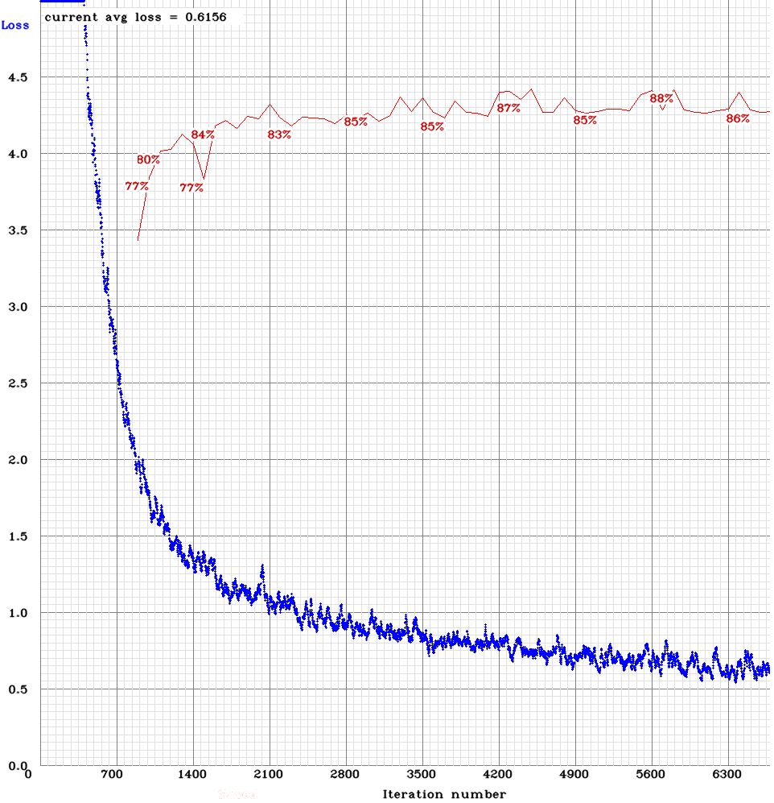
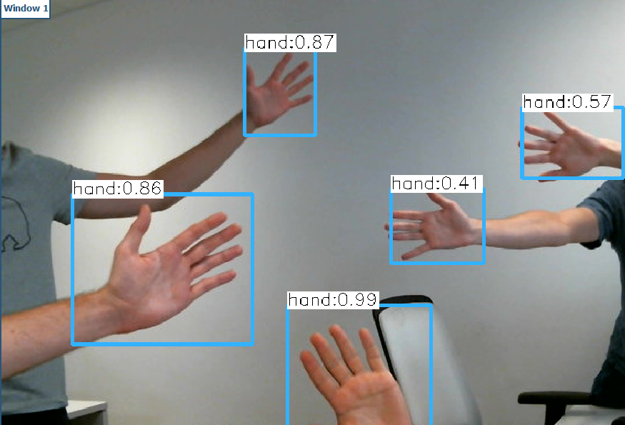
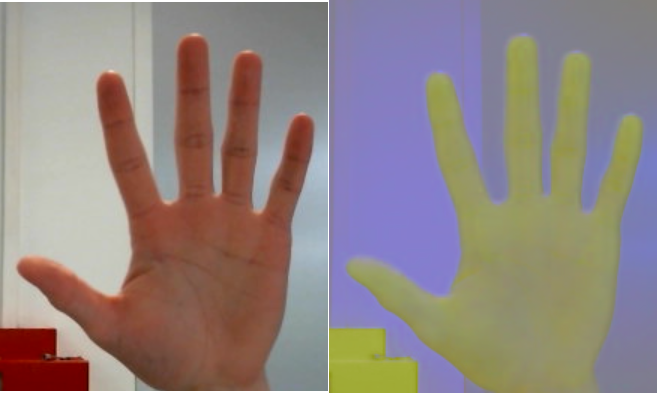
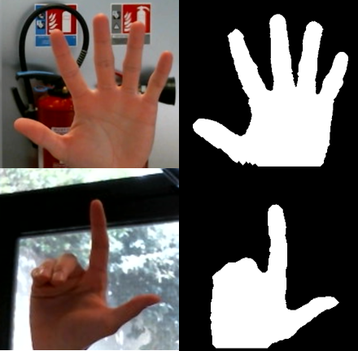
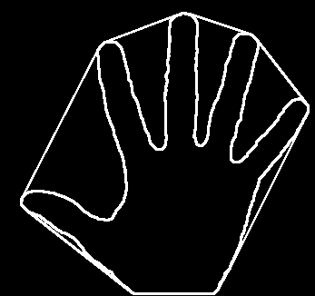
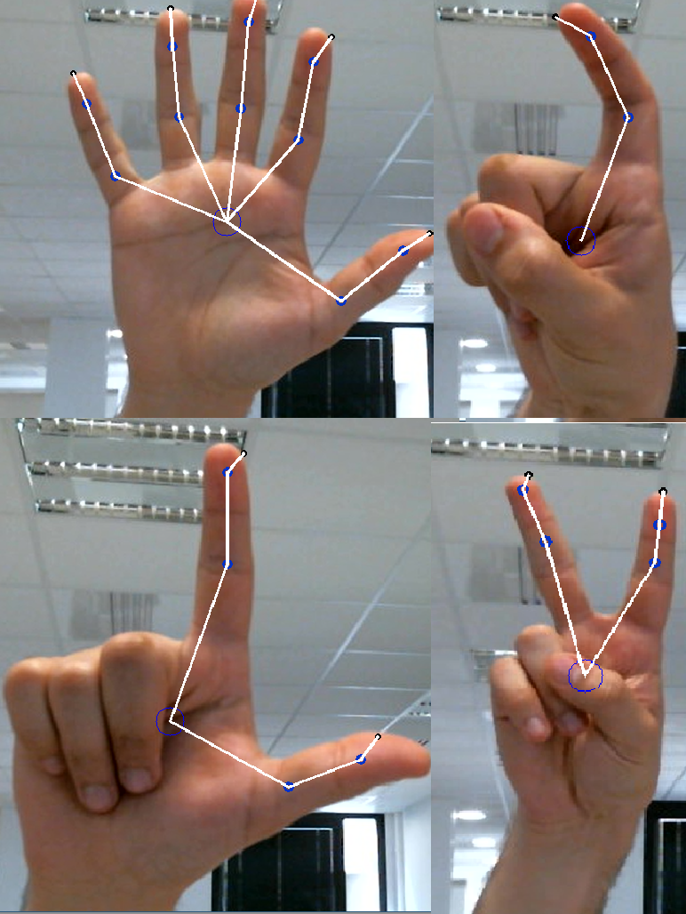
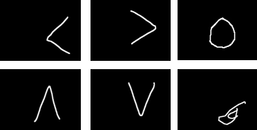
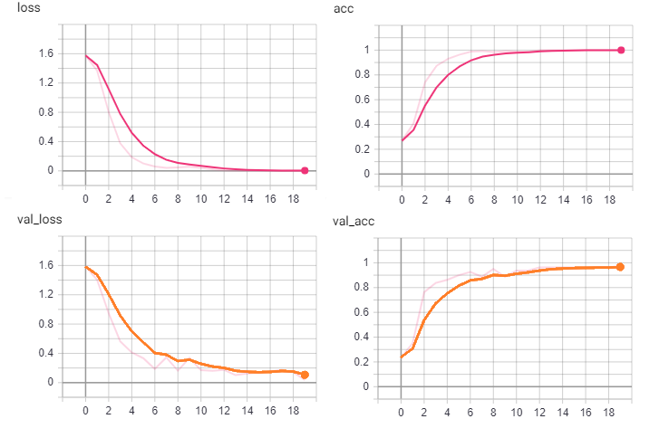

Cette page vise à présenter le travail réalisé pendant le stage. L'algorithme développé est divisible en trois grands sujets. Chaque sujet est l'une des parties de cette page.
Ce projet, initié par la cellule innovation d'Aubay France, vise à détecter et comprendre les gestes et mouvements de la main. Les enjeux du projets résident dans la création d'une intelligence artificielle capable de détecter ces gestes et mouvements ainsi que dans le traitement d'images pour binariser la main.
La première étape du travail à consisté en l'assimilation et la compréhension des travaux précédemment effectué sur le sujet.
Différentes recherches permettent de faire un état des projets et technologies pouvant être utile au projet
Pour la partie binarisation de la main :Pour la partie intelligence artificielle :
Pour détecter les mains, le projet s'appuie sur le modèle YOLO pour You Only Look Once. Ce modèle permet de trouver le ou les objets pour lesquels s il a été entraîné avec une précision très honorable et une vitesse bien supérieures aux autres types de réseaux actuellement utilisés.
Après avoir constitué une imposante base de données, il est possible d'entraîner le modèle pour reconnaître les mains. Les images ci-dessous montrent l'évolution de la précision du modèle (en rouge) et la fonction de coût du modèle (en bleu) au cours du temps ainsi qu'un grand nombre de mains détectées de manière fluide par le modèle.


Le modèle atteint une précision de 89% avec la métrique mAP pour un IoUcorrect si superieur à 50%. Cette précision est amplement suffisante pour détecter la majorité des mains. La fluidité à cette étape est de 30 images par seconde.
Une fois la ou les mains localisées il faut en extraire les points caractéristiques: centre, nombre de doigts ... Pour cela, l'algorithme effectue une série de traitement décrits ci-dessous.
La première étape est la binarisation de la main. Pour efectuer celle-ci le programme commence par convertir l'image dans l'espace de couleurs LAB. La photo ci-dessous montre le passage d'une main dans l'espave LAB. Ensuite, le seuillage est effectué par la méthode d'Otsu et permet d'obtenir une binarisation fidèle de la main
 
Une fois la main binarisée, il est possible d'extraire son contour. A l'aide des moments de cette image on obtient la position du centre de la main. En calculant ensuite le contour de Hull de ce contour de main (image ci-dessous) il est possible de trouver l'ensemble des doigts de la main.

Une fois la position des doigts connue, il est possible de trouver un squelette de la main (figure ci-dessous). En interprétant plusieurs paramètres tels que l'angle entre les doigts et le nombre de doigts levés, il est possible de déterminer quel geste est effectuée.

Le programme est capable de reconnaitre 10 gestes différents.
Après être capable de détecter 10 gestes, l'outil est aussi capable de détecter cinq mouvements. Pour cela, un second modèle est entraîné. Le modèle est entraîné sur des images montrant l'évolution d la position de la main au cours du temps. La figure ci-dessous illustre les 5 mouvements reconnaissable ainsi qu'un mouvement parasite.

Le réseau a été confronté à du surraprentissage, après plusieurs révisions, il atteint un score de 95.5% sur le jeu de test. Le modèle détecte 100% des mouvements de la base d'entraînement. En détectant 5 mouvements et 10 gestes, il est possible de réaliser un grand nombre d'interactions.

En combinant la détection de gestes et de mouvements, une multitude d'actions peuvent être interprétés. Ces actions sont ensuite converties en actions faites par l'ordinateur ou l'objet lié à notre programme.
Ce travail se conclut par la création de deux interfaces de travail utilisant l'interprétation des gestes et mouvements pour interagir avec l'ordinateur. Une version de démonstration présentée dans la galerie du site et une version utilisateur, plus petite et toujours à l'écran permettant une fluidité dans son utilisation.